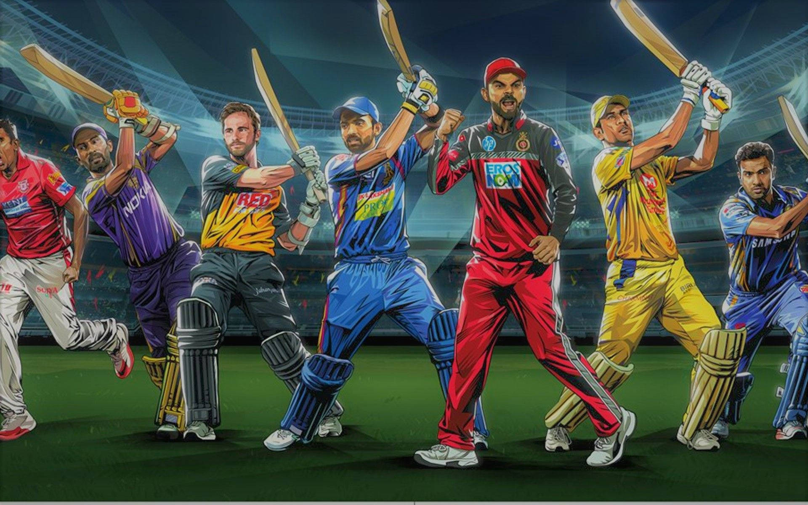

This project automates the process of fetching, analyzing, and delivering stock market insights.
Using the Alpha Vantage API, it retrieves stock data, performs time-based trend analyses,
and calculates technical indicators such as moving averages, RSI, and Bollinger Bands.
The analyzed data is compiled into HTML reports and sent to subscribers via Amazon SES.
The solution integrates AWS Lambda, Docker, and EventBridge for seamless daily automation, with subscriber data securely managed in DynamoDB.

The IPL Chatbot combines OpenAI's GPT model and Streamlit to provide an interactive platform for exploring Indian Premier League (IPL) data.
Users can query data in plain English, which is translated into SQL commands for seamless interaction with a Snowflake Data Warehouse.
Key Features:
Natural language querying for intuitive data exploration.
Responsive Streamlit interface.
Real-time data access via Snowflake integration.
Robust error handling and query validation.
Technology Stack:
OpenAI's GPT Model, Snowflake, Streamlit, Python
This project demonstrates expertise in natural language processing, data warehousing, and sports analytics.
Focused on designing a relational database for an OTT subscription business, this project included creating a detailed Entity-Relationship Diagram (ERD) to structure data effectively.
It implemented stored procedures to optimize query execution and encryption techniques to secure sensitive information like user data and payment details.
Additionally, business insights were presented through dashboards and visualizations in Tableau, enabling informed decision-making.
This project modeled the financial future of a recent engineering graduate by comparing scenarios involving education choices, living expenses, and investment strategies.
Variables such as base salary, education costs, taxes, and stock yields were factored into calculations of future worth.
The analysis offered personalized insights into the trade-offs between career investments and long-term financial growth.

This project offers a detailed exploration of COVID-19 data, analyzing case trends, vaccination rates, and geographic patterns.
By utilizing tools like SQL and Tableau, data was cleaned, transformed, and visualized effectively.
The analysis provided actionable insights into the progression of the pandemic and highlighted key areas for intervention, with visualizations tailored to enhance understanding.

The Nashville Housing project focused on preparing raw housing data for analysis through advanced SQL techniques.
It involved data normalization, identifying and removing duplicates, and addressing inconsistencies.
The result was a clean, well-structured dataset ready for deeper analysis, showcasing expertise in data preparation and transformation.
This project analyzed the relationships between financial and production factors within the movie industry.
Using a Kaggle dataset, the data was preprocessed to handle missing values and cleaned for analysis.
A correlation matrix and visualizations like heatmaps were used to uncover trends between variables such as budgets, revenues, and user ratings.
The findings provided insights into financial success factors in movie production.